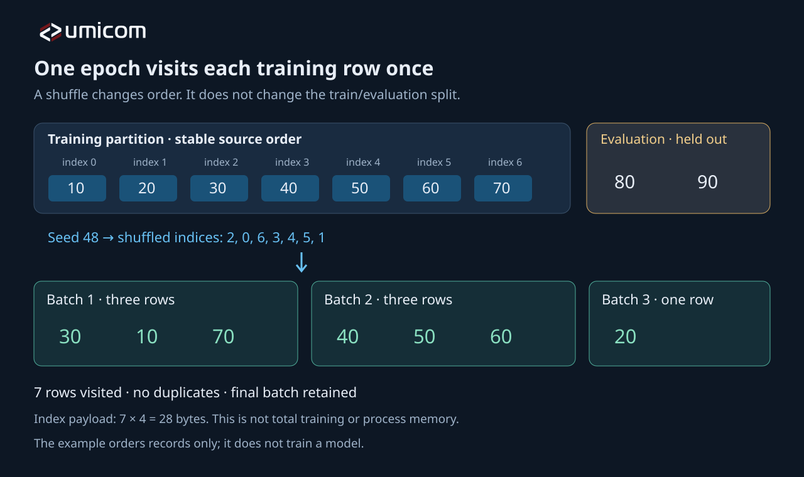

Shuffle an epoch without changing the split

Give every word a concrete meaning
A dataset is a collection of examples. A row is one example in the representation you selected: perhaps one prompt and answer, one captioned image, or one sequence of tokens. An index is a whole number identifying a position in that collection. C arrays start at index zero, so seven rows have indices 0 through 6. The row may have its own permanent identifier as well. In this lesson index 0 refers to training record 10, index 1 refers to record 20, and so on. An index is a position, not a permanent identity. Reordering the source rows changes what that index means.
- Keep the seven training identifiers in the array trainingIds: 10, 20, 30, 40, 50, 60, 70.
- Keep evaluation identifiers 80 and 90 in a separate array. Evaluation means assessing performance on examples excluded from parameter updates.
- Read the source file in this lesson before building it. It creates row order and prints batches; it does not create or train a model.
Separate three decisions
A split decides which examples belong to training and which belong to evaluation. A shuffle changes the visiting order within one already-selected collection. A batch groups some visited examples for one operation. These decisions answer different questions. Shuffling all examples before every epoch and then treating the last few as evaluation would change membership repeatedly. A model could eventually train on examples you previously called held out. Select and record the split first; shuffle only the training membership afterward. Related examples, such as frames from one video or chunks of one document, normally need grouped splitting to reduce leakage.
| Decision | Example | What remains stable |
|---|---|---|
| Partition | Training IDs 10–70; evaluation IDs 80 and 90 | Membership across epochs |
| Order | Indices 2, 0, 6, 3, 4, 5, 1 | The original seven training rows |
| Batch | First three indices, next three, final one | Each row appears once in this epoch |
Understand an epoch and replacement
An epoch conventionally means one complete pass over the selected training examples. A permutation is an order containing every index exactly once. The new Framework function produces that order. Sampling with replacement is a different policy: each draw can choose any eligible example again. Some rows may appear several times while others do not appear in a fixed number of draws. Existing Framework window sampling uses replacement and remains available. Neither policy is universally best. The training recipe must say which one it uses; do not label an arbitrary set of random draws as proof that every row was visited.
- Write seven cards labelled 0 through 6 and rearrange them without adding or removing cards. This is a permutation.
- Draw a card, record it and return it before the next draw. This allows replacement.
- Compare both procedures with choosing training and evaluation cards. That earlier choice is partitioning, not ordering.
Call one shared native service
The application owns a uint32_t array large enough for the row indices. uint32_t is an unsigned 32-bit integer type. The service accepts a row count, a 64-bit seed, the output pointer and its element capacity. A seed is the starting value for a deterministic pseudorandom generator. The same seed and count reproduce the same integer order. The function uses Framework’s existing integer random sampler and a descending Fisher–Yates shuffle; application code does not implement another random generator. Fisher–Yates starts with the ordered indices and swaps the last remaining position with a uniformly selected position among the remaining positions, shrinking that range after each swap.
uint32_t order[7];
UmiStatus status = UmiAiTrainingSampleOrder(7U, 48U, order, 7U);
if (status != UMI_STATUS_OK) {
return 1;
}
/* order is now 2, 0, 6, 3, 4, 5, 1 */Follow the memory ownership
The service allocates one temporary array of rowCount multiplied by sizeof(uint32_t) bytes. For seven rows that payload is 28 bytes. For the maximum 65,536 rows it is 262,144 bytes, or 256 KiB. A KiB is 1,024 bytes. Allocator bookkeeping is additional memory, and these values are not total process memory. The service constructs the whole order privately, copies it to your output only after success, then frees its temporary storage. It retains no dataset pointer. If a count, capacity, allocation or random-sampler operation fails, your output stays unchanged. Always inspect the returned status before reading the output; unchanged data may be an older order or uninitialized storage, not a new result.
- Allocate output once at the size your application has approved. The function does not allocate the caller array for you.
- Pass capacity in uint32_t elements, not bytes. Seven elements are sufficient; 28 is the payload byte count.
- Do not resize or concurrently write the output while the call is running. C still requires valid pointers and lifetimes.
- After the call, the caller continues owning the output. The service has already released its private scratch array.
Keep the final batch deliberately
With seven rows and a desired batch size of three, the batches contain three, three and one row. The loop subtracts the current start position from the total before choosing how much to take. This avoids reading imaginary eighth and ninth rows. Some model interfaces require a fixed shape. Such a caller can explicitly pad and mask the last batch, or use a reviewed policy that drops it. This example keeps it. Dropping a tail changes which examples contribute to training; repeating the same order could exclude the same rows repeatedly. Also remember that unequal batches and unequal selected-token counts require a defined loss-reduction policy. One mean per batch is not automatically the mean over every token.
for (size_t start = 0U; start < 7U;) {
size_t remaining = 7U - start;
size_t take = remaining < 3U ? remaining : 3U;
for (size_t j = 0U; j < take; ++j) {
uint32_t row = order[start + j];
/* Read trainingIds[row] or the corresponding prepared example. */
}
start += take;
}Build and run the complete example
Use a PowerShell terminal with CMake, Ninja and a C23-capable compiler available. CMake describes the compilation, Ninja performs it, and CTest runs the registered check. These commands assume your checkout is C:\umicom\Umicom-Bits2Banking and the matching Framework checkout is beside it under Umicom-Applications. Replace both paths if your own checkout differs. The selected build directory contains generated files; it is separate from the lesson’s source. Stop if any command reports an error. This small source composition builds the real shared functions used by the lesson; it does not install or qualify the complete Framework SDK.
Set-Location "C:\umicom\Umicom-Bits2Banking"
cmake -S labs/framework/training-row-order -B build/learning-row-order -G Ninja -DCMAKE_C_COMPILER=C:/msys64/ucrt64/bin/gcc.exe -DUMICOM_FRAMEWORK_SOURCE=C:/umicom/Umicom-Applications/framework
cmake --build build/learning-row-order
ctest --test-dir build/learning-row-order --output-on-failure
& ".\build\learning-row-order\umicom-training-row-order.exe"Compare the result, then replay it
The program checks the exact reference order, checks that replay matches it, and refuses duplicate or out-of-range visits. You should see the three batches below. The final line reports that evaluation identifiers remain separate. If CMake reports a missing sample_order header or source, select a matching Framework checkout containing both files; do not create an empty header to continue. If compilation or CTest fails, inspect that error before running an older executable. Changing the seed intentionally changes the expected-vector exercise, so update the expected result only after independently checking the new order.
batch 1: 30 10 70
batch 2: 40 50 60
batch 3: 20
rows=7 batches=3 seed=48 temporary-payload=28 bytes
held out: 80 90; source row order unchangedRecord enough information to resume
A seed alone is not a training checkpoint. Record the dataset content identity, stable row order, partition membership, shuffle implementation or version, seed, position within the order, model parameters, optimizer state and training recipe. Reusing a seed repeats an order; the service does not secretly advance an epoch counter. Different seeds can sometimes produce the same permutation, especially for tiny datasets. A finite 64-bit seed cannot represent every possible permutation of a large dataset. Reproducibility does not prove useful randomness, good model quality or secrecy. The generator is unsuitable for passwords or security tokens.
- Run the unchanged program twice and compare its printed batches. They should match.
- Change only the batch size from three to two. Predict four batches of sizes two, two, two and one; the visiting order should remain the same. Update the program’s batch-count assertion as part of the exercise.
- Explain why evaluation IDs must not enter the array supplied to the training loop.
- Explain what extra state is required to resume after the second batch without revisiting or skipping rows.